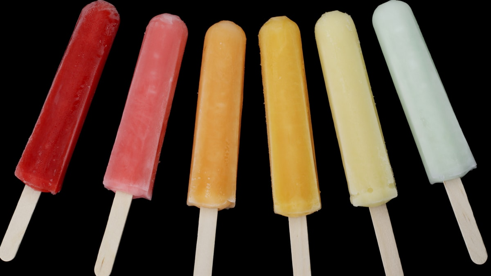

Popsicle Recipe

Description
Who doesn't want a nice cool popsicle on a hot day? But popsicles aren't always stocked up and they can be
expensive.
What if I told you you can make them at home? Well, it's true! You just need some juice, a
container, and a stick.
It's very easy to make.
Ingredients
Equipment
- a container for the juice
- a stick to put in juice. Like...
- popsicle stick
- spoon
- metal straw
- plastic wrap to keep stick in place
- freezer
Steps
- Pour your favorite juice into a container. A drinking glass or popsicle mold could work.
- Place plastic wrap over the opening of container tightly
- Push stick through plastic wrap into container (Make sure you leave some of the stick out so you can grip it)
- Place container into freezer for atleast 8 hours
- Pull popsicle out of container and enjoy!